Chapter 15. C++ 입출력 시스템¶
'명품 C++Programming - 황기태' 11장 학습 내용
1절. 스트림
2절. 스트림 객체
3절. 포맷
4절. 조작자
5절. 연산자
1절. 스트림¶
스트림(stream)¶
- 데이터의 흐름
- 데이터를 전송하는 소프트웨어 모듈
- 흐르는 시내와 유사한 개념
- 스트림의 양 끝에는 프로그램과 장치 연결
- 보낸 순서대로 데이터 전달
- 입출력 기본 단위 : 바이트(byte)
- 스트림 종류
- 입력 스트림
- 입력 장치, 네트워크, 파일로부터 데이터를 프로그램으로 전달하는 스트림
- 출력 스트림
- 프로그램에서 출력되는 데이터를 출력 장치, 네트워크, 파일로 전달하는 스트림
C++ 입출력 스트림¶
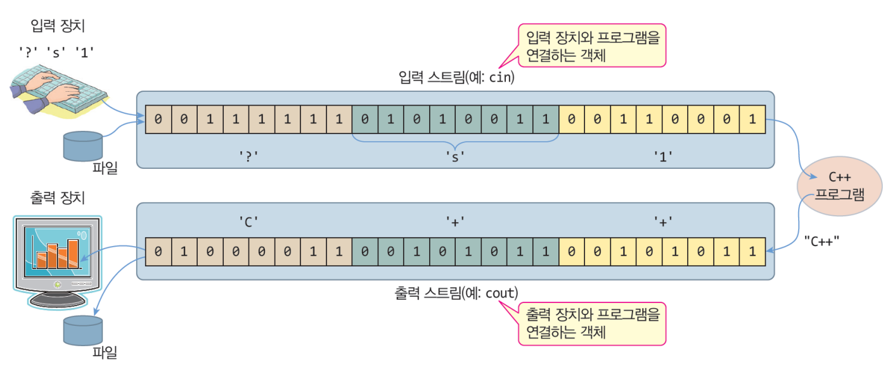
C++ 입출력 스트림 버퍼¶
- C++ 입출력 스트림은 버퍼를 가짐
- 키 입력 스트림의 버퍼
- 목적
- 입력장치로부터 입력된 데이터를 프로그램으로 전달하기 전에 일시 저장
- 키 입력 도중 수정 가능
키가 입력되면 이전 입력된 키를 버퍼에서 지움
- 프로그램은 사용자의 키 입력이 끝난 시점에서 읽음
키 : 키 입력의 끝 키가 입력된 시점부터 키 입력 버퍼에서 프로그램이 읽기 시작
- 스크린 출력 스트림 버퍼
- 목적
- 프로그램에서 출력된 데이터를 출력 장치로 보내기 전에 일시 저장
- 출력 장치를 반복적으로 사용하는 비효율성 개선
- 버퍼가 꽉 차거나 강제 출력 명령 시에 출력 장치에 출력
키 입력 스트림과 버퍼의 역할¶
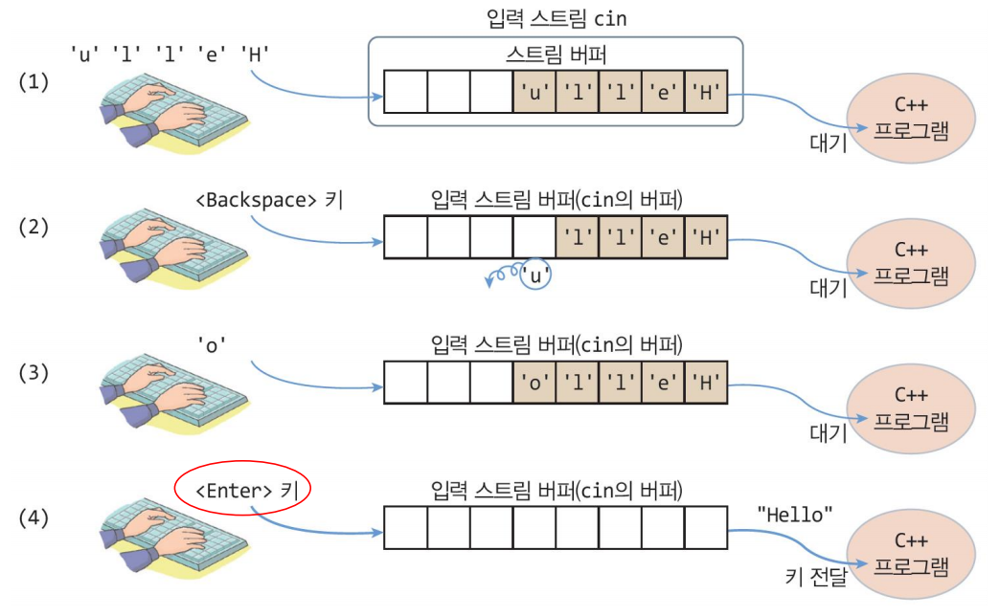
스크린 출력 스트림과 버퍼의 역할¶
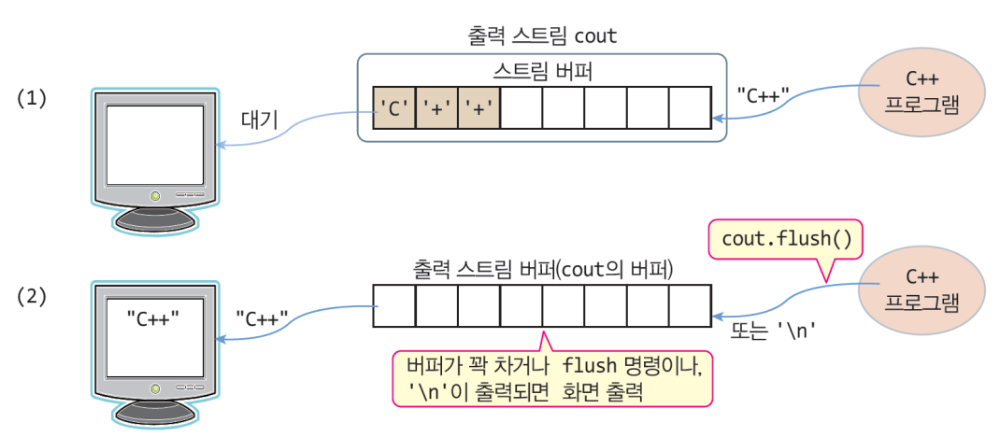
C++ 표준 : 스트림 입출력만 지원¶
- 입출력 방식 2가지
- 스트림 입출력 방식(stream I/O)
- 슽트림 버퍼를 이용한 입출력 방식
- 입력된 키는 버퍼에 저장
키가 입력되면 프로그램이 버퍼에서 읽어가는 방식 - 출력되는 데이터는 일차적으로 스트림 버퍼에 저장
- 특정한 경우에만 버퍼가 출력 장치에 출력
- 버퍼가 꽉 찼을 경우
- '\n'을 만난 경우
- 강제 출력 명령의 경우
- 저 수준 입출력 방식(raw lever console I/O)
- 키가 입력되는 즉시 프로그램에게 키 값 전달
키 그 자체도 프로그램에 바로 전달 - 게임 등 키 입력이 즉각적으로 필요한 곳에 사용
- 프로그램이 출력하는 즉시 출력 장치에 출력
- 컴파일러마다 다른 라이브러리나 API 지원
- C++ 프로그램의 호환성 낮음
- C++ 표준은 스트림 방식만 지원
- 스트림 입출력은 모든 표준 C++ 컴파일러에 의해 컴파일
- 높은 호환성
2003년 이전의 C++ 입출력 라이브러리 약점¶
- 대표적인 구 표준(C++03) 입출력 라이브러리 클래스
- ios, istream, ostream, iostream, ifstream, ofstream, fstream
- 문자를 한 바이트의 char로 처리
- cin >> 로 문자를 읽을 때, 한글 문자 읽기 불가능
- 영어나 기호 : 1 바이트
- 한글 문자 : 2 바이트
- 현재도 cin은 한글을 문자 단위로 읽을 수 없음
새 표준 C++ 입출력 라이브러리¶
- 다양한 크기의 다국어 문자를 수용하기 위해 입출력 라이브러리를 템플릿으로 작성
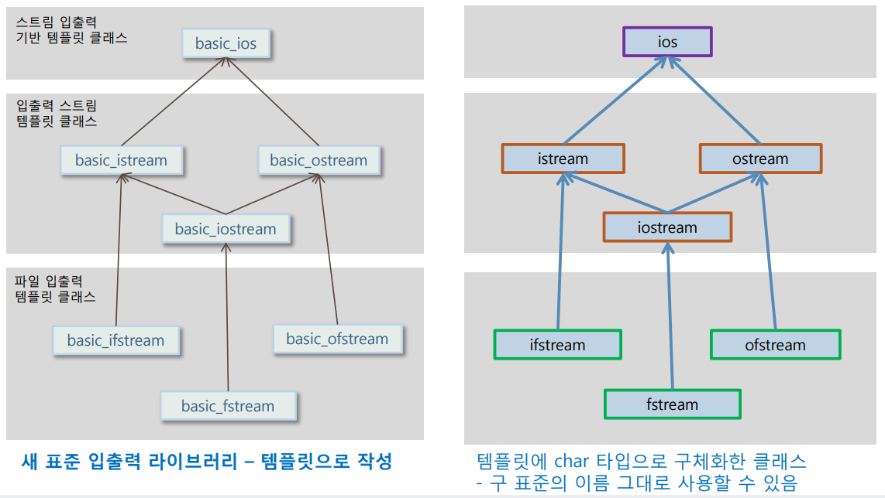
typedef로 선언된 ios, istream, ostream, iostream 클래스¶
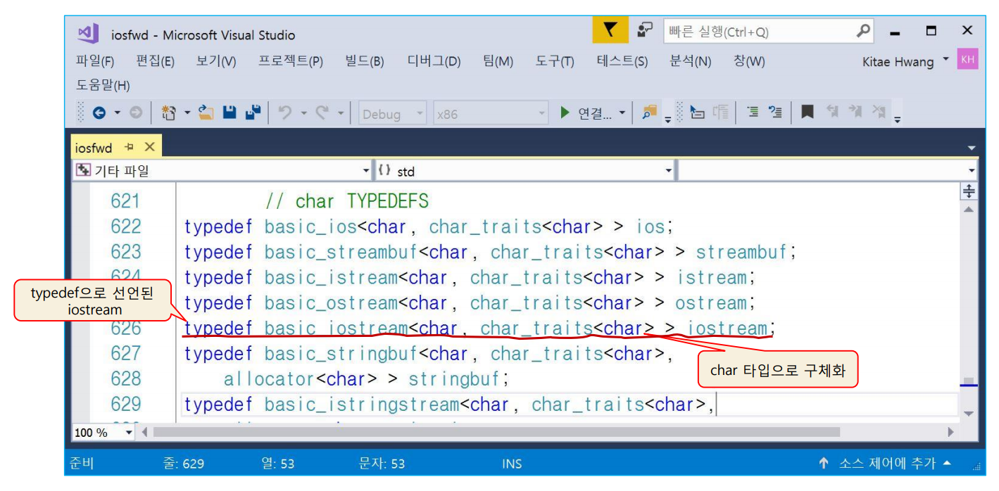
입출력 클래스 소개¶
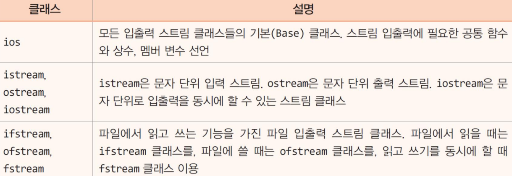
2절. 스트림 객체¶
표준 입출력 스트림 객체¶
- C++ 프로그램이 실행될 때 자동으로 생겨나는 스트림
- cin
- istream 타입의 스트림 객체
- 키보드 장치와 연결
- cout
- ostream 타입의 스트림 객체
- 스크린 장치와 연결
- cerr
- ostream 타입의 스트림 객체
- 스크린 장치와 연결
- 오류 메시지를 출력할 목적
- 스트림 내부 버퍼 거치지 않고 출력
- clog
- ostream 타입의 스트림 객체
- 스크린 장치와 연결
- 오류 메시지를 출력할 목적
- 스트림 내부 버퍼 거치지 않고 출력
iostream에 선언된 스트림 객체¶
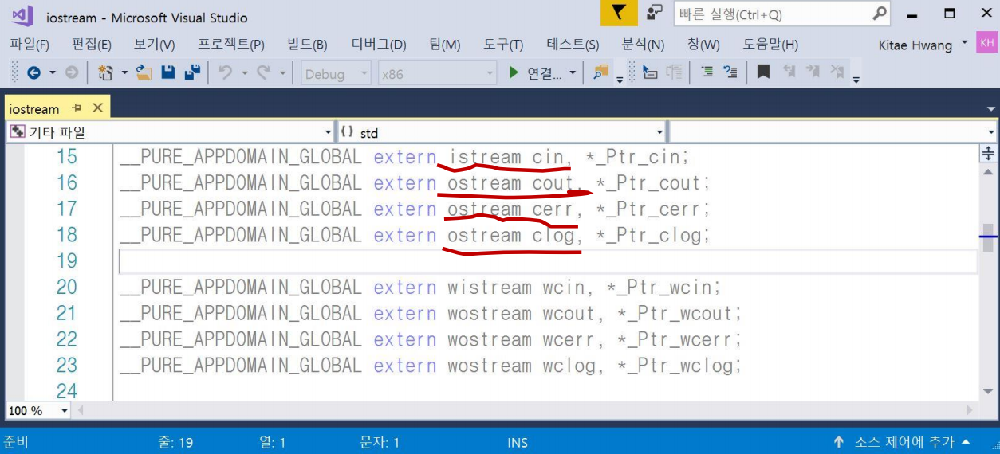
ostream 멤버 함수¶
ostream& put(char ch);
// ch의 문자를 스트림에 출력
ostream& write(char *str, int n)
// str 배열에 있는 n개의 문자를 스트림에 출력
ostream& flush()
// 현재 스트림 버퍼에 있는 내용 강제 출력
- 예제 1. ostream 멤버 함수를 이용한 문자 출력 예제
SourceCodeChecking
istream 멤버 함수 : 문자 입력, get() 함수¶
int get()
// 입력 스트림에서 문자를 읽어 리턴
// 오류나 EOF를 만나면 -1(EOF) 리턴
istream& get(char& ch)
// 입력 스트림에서 문자를 읽어 ch에 저장
// 현재 입력 스트림 객체(*this)의 참조 리턴
// 오류나 EOF를 만나면 스트림 내부의 오류 플래그(failbit) 세팅 - (16장 참고)
- int get()을 이용하여 한 라인의 문자들을 읽는 코드
int ch;
while((ch = cin/get()) != EOF{
// EOF = -1 : 입력 스트림의 끝인지 비교
cout.put(ch);
// 읽은 문자 출력
if(ch == '\n') break;
// <Enter> 키가 입력되면 읽기 중단
- istream& get(char& ch)을 이용하여 한 라인의 문자들을 읽는 코드
char ch;
while(true){
cin.get(ch);
// 입력된 키를 ch에 저장하여 리턴
if(cin.eof()) break;
// EOF를 만나면 읽기 종료 : 입력 스트림의 끝인지 비교
cout.put(ch);
// ch의 문자 출력
if(ch == '\n') break;
// <Enter> 키가 입력되면 읽기 중단
}
ch = cin.get()의 실행 사례¶
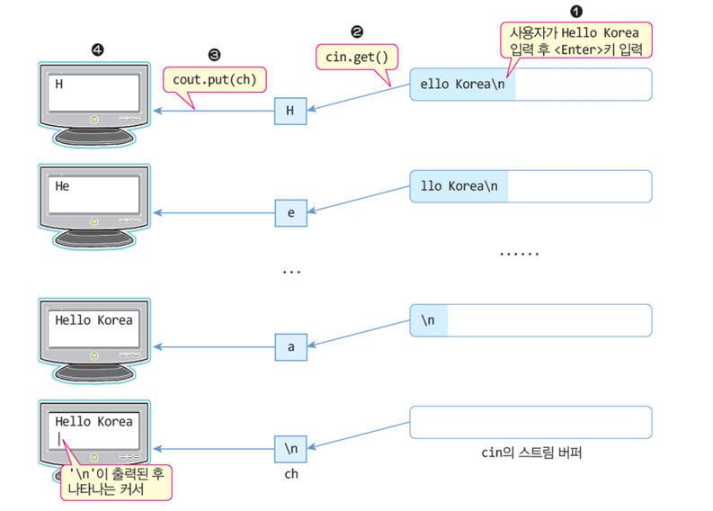
- 예제 2. get()과 get(char&)을 이용한 한 줄의 문자를 읽는 예제
SourceCodeChecking
문자열 입력¶
istream& get(char *s, int n);
// 입력 스트림으로부터 n-1개의 문자를 읽어 배열 s에 저장
// 마지막에 '\0' 문자 삽입
// 입력 도중 '\n'을 만나면 '\0'을 삽입하고 리턴
- 사용 예시
-
입력 도중
키('\n')을 만날 때 -
읽기를 중단하고 리턴
-
키('\n')를 스트림 버퍼에 남김 - 다시 get()으로 문자열 읽기를 시도하면 입력 스트림에 남은 '\n'키를 읽게 되어 무한 루프에 빠짐
- cin.get()이나 cin.ignore(1);를 통해 문자 1개('\n')를 스트림에서 읽어야 함
-
예제 3. get(char*, int)을 이용한 문자열 입력 예제
SourceCodeChecking
한 줄 읽기¶
istream& get(char *s, int n, char delim = '\n');
// 입력 스트림으로부터 최대 n-1개의 문자를 읽어 배열 s에 저장
// 마지막에 '\0' 문자 삽입
// 입력 도중 delim에 지정된 구분 문자를 만나면 지금까지 읽은 문자를 배열 s에 저장하고 리턴
istream& getline(char *s, int n, char delim = '\n');
// get()과 동일하지만 delim에 저장된 구분 문자를 스트림에서 제거
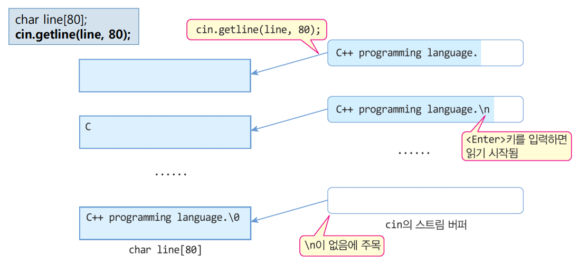
- 예제 4. getline()으로 한 줄 단위 문장 읽는 예제
SourceCodeChecking
입력 문자 건너뛰기와 문자 개수 알아내기¶
istream& ignore(int n = 1, int delime = EOF);
// 입력 스트림에서 n개 문자 제거
// 도중 delim 문자를 만나면 delim 문자를 제거하고 리턴
int gcount();
// 최근 입력 스트림에서 읽은 바이트 수(문자의 개수) 리턴
// <Enter> 키도 개수에 포함
- 입력 스트림에서 문자 건너뛰기
cin.ignore(10);
// 입력 스트림에 입력된 문자 중 10개 제거
cin.ignore(10, ';');
// 입력 스트림에서 10개의 문자 제거
// 제거 도중 ';' 을 만나면 종료
- 최근에 읽은 문자 개수 리턴
3절. 포맷¶
포맷 입출력¶
- 입출력 시 포맷 지정 가능
- C언어의 printf()와 유사
- 포맷 입출력 방법 3가지
- 포맷 플래그
- 포맷 함수
- 조작자
포맷 플래그¶
- 입출력 스트림에서 입출력 형식을 지정하기 위한 플래그
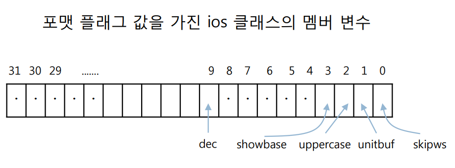
ios 클래스에 정의된 포맷 플래그¶
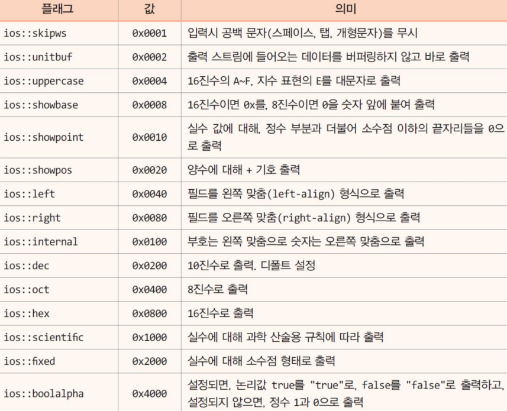
포맷 플래그를 세팅하는 멤버 함수¶
long setf(long flags);
// flags를 스트림의 포맷 플래그로 설정하고 이전 플래그 리턴
long unsetf(long flags);
// flags에 설정된 비트 값에 따라 스트림의 포맷 플래그를 해체하고 이전 플래그 리턴
- 10진수를 16진수로 출력 예시
- 사용 예시 2
cout.setf(ios::dec | ios::showpoint);
// 10진수 표현, 실수에 소숫점 이하 나머지는 0으로 출력 설정
cout << 23.5 << endl;
// 23.5000으로 출력
- 예제 5. setf(), unsetf() 사용한 포맷 출력 예제
SourceCodeChecking
포맷 함수 활용¶
int width(int minWidth);
// 출력되는 필드의 최소 너비를 minWidth로 설정
//- 이전에 설정된 너비 값 리턴
char fill(char cFill);
// 필드의 빈칸을 cFill 문자로 채우도록 지정하고 이전 문자 값 리턴
int precision(int np);
// 출력되는 수의 유효 숫자 자리 수를 np개로 설정
// 정수 부분과 소수점 이하의 수의 자리를 모두 포함하고 소수점(.) 제외
- 너비 설정 예제 1
cout.width(10);
// 다음에 출력되는 "hello"를 10칸으로 지정
cout << "hello" << endl;
// 빈칸 5 + hello 5문자 출력
cout.width(5);
// 다음에 출력되는 12를 5칸으로 지정
cout << 12 << endl;
// 빈칸 3 + 12 2문자 출력
// 출력 예시
// hello
// 12
- 너비 설정 예제 2
cout << '%';
cout.width(10);
// 다음에 출력되는 "Korea/"만 10칸으로 지정
cout << "Korea/" << "Seoul/" << "City" << endl;
// 출력 예시
// % Korea/Seoul/City
- 빈칸 채우기 예제
- 유효 숫자 자리 수 예제
- 예제 5. width(), fill(), precision() 사용한 포맷 출력 예제
SourceCodeChecking
4절. 조작자¶
조작자¶
- manipulator
- 스트림 조작자(stream manipulator)
- 조작자는 함수
- C++ 표준 라이브러리에 구현된 조작자 : 입출력 포맷 지정 목적
- 개발자만의 조작자 작성 가능 : 다양한 목적
- 매개 변수 없는 조작자와 매개 변수를 가진 조작자로 구분
- 조작자는 항상 << 나 >> 연산자와 함께 사용
조작자의 종류¶
- 매개 변수 없는 조작자
cout << hex << showbase << 30 << endl;
cout << dex << showpos << 100 << endl;
// 출력 예시
// 0x1e
// +100
- 매개 변수 있는 조작자
-
include
필요¶
매개 변수 없는 조작자¶
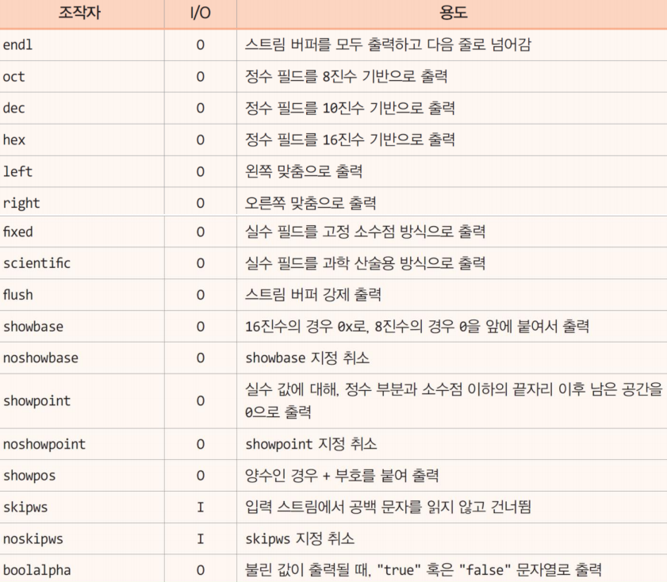
매개 변수 있는 조작자¶
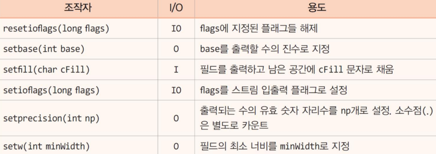
-
예제 7. 매개 변수 없는 조작자 사용 예제
SourceCodeChecking -
예제 8. 매개 변수 있는 조작자 사용 예제
SourceCodeChecking
조작자 실행 과정¶
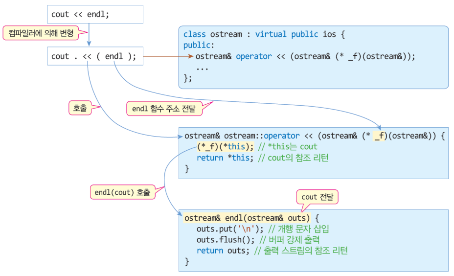
사용자 정의 조작자 함수 원형¶
- 매개 변수 없는 조작자
istream& manipulatorFuncion(istream& ins);
// 입력 스트림에 사용되는 조작자 원형
ostream& maniupularFunction(ostream& outs);
// 출력 스트림에 사용되는 조작자 원형
-
예제 9. 사용자 정의 조작자 예제 1
SourceCodeChecking -
예제 10. 사용자 정의 조작자 예제 2
SourceCodeChecking
5절. 연산자¶
삽입 연산자(<<)¶
- insertion operator
- 삽입자라고 불림
- << 연산자는 C++의 기본 연산자 : 정수 shift 연산자
- ostream 클래스에 중복 작성
class ostream: virtual public ios{
...
public:
ostream& operator << (int n);
// 정수를 출력하는 << 연산자
ostream& operator << (char c);
// 문자를 출력하는 << 연산자
ostream& operator << (const char* s);
// 문자열를 출력하는 << 연산자
...
};
삽입 연산자의 실행 과정¶
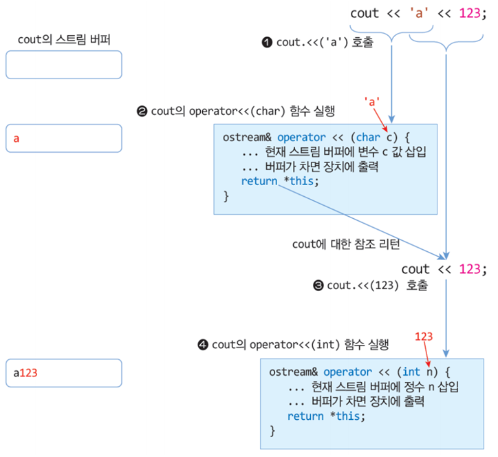
사용자 삽입 연산자 만들기¶
- 개발자가 작성한 클래스의 객체에 << 연산자 출력 예제
#include <iostream>
using namespace std;
class Point{
int x, y;
public:
Point(int x = 0, int y = 0){ this->x = x; this->y = y; }
friend ostream& operator <<(ostream& stream, Point a);
};
ostream& operator <<(ostream& stream, Point a){
stream << "(" << a.x << ", " << a.y << ")";
return stream;
}
int main(){
Point p(3, 4);
// Point 객체 생성
cout << p << endl;
// Point 객체 화면 출력
Point q(1, 100), r(2, 200);
// Point 객체 생성
cout << q << r << endl;
// Point 객체 화면 출력
}
// 출력 예시
// (3, 4)
// (1, 100)(2, 200)
cout << p;를 위한 << 연산자 만들기¶
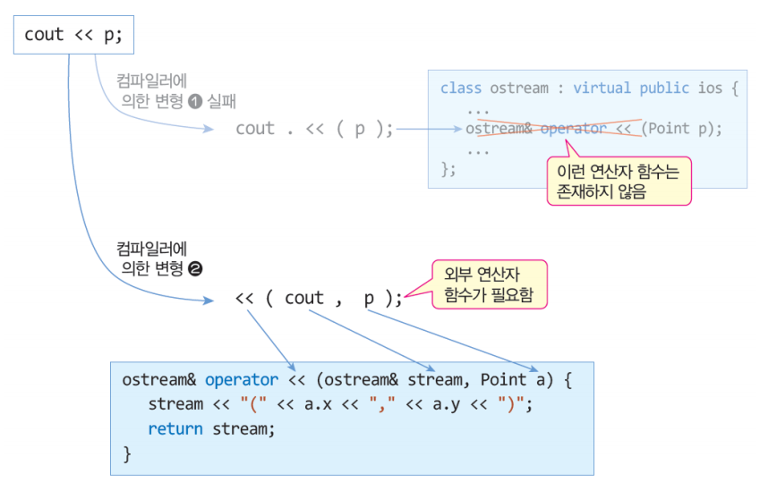
- 예제 11. Book 클래스 예제
SourceCodeChecking
추출 연산자(>>)¶
- extraction operator
-
연산자는 C++의 기본 연산자 : 정수 shift 연산자
- ostream 클래스에 중복 작성
class istream : virtual public ios{
...
public:
istream& operator >> (int& n);
// 정수를 입력하는 >> 연산자
istream& operator >> (char& c);
// 문자를 입력하는 >> 연산자
istream& operator >> (const char* s);
// 문자열를 입력하는 >> 연산자
...
};
- 추출 연산자의 실행 과정
- 삽입 연산자의 실행 과정과 유사
사용자 추출 연산자 만들기¶
- 개발자가 작성한 클래스의 객체에 >> 연산자 입력
#include <iostream>
using namespace std;
class Point { // 한 점을 표현하는 클래스
int x, y; // private 멤버
public:
Point(int x = 0, int y = 0) { this->x = x; this->y = y; }
friend istream& operator >> (istream& ins, Point &a); // friend 선언
friend ostream& operator << (ostream& stream, Point a); // friend 선언
};
istream& operator >> (istream& ins, Point &a){ // >> 연산자 함수
cout << "x 좌표 >> ";
ins >> a.x;
cout << "y 좌표 >> ";
ins >> a.y;
return ins;
}
ostream& operator << (ostream& stream, Point a){
stream << "(" << a.x << ", " << a.y << ")";
return stream;
}
int main() {
Point p;
// Point 객체 생성
cin >> p; // >> 연산자 호출하여 x 좌표와 y 좌표를
cout << p; // << 연산자 호출하여 객체 p 출력
}
// 출력 예시
// x 좌표 >> 100
// y 좌표 >> 200
// (100,200)
// 첫 줄부터 cin >> p, cout << p 실행
cin >> p;를 위한 >> 연산자 만들기¶
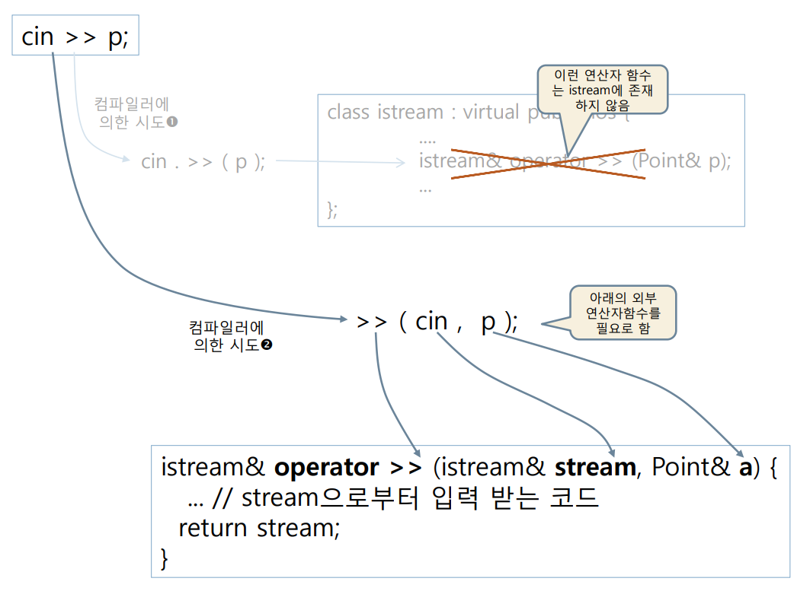